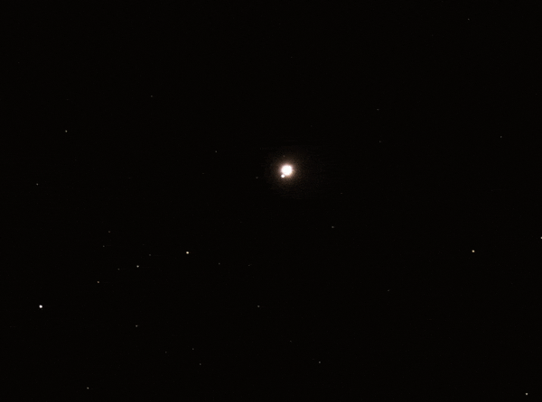

Asteroseismology#
Notes based on Onno Pol’s notes on radial stellar pulsations - Section 10.4.1 +
Additional Recommended Reading: Probing the interior physics of stars through asteroseismology by Conny Aerts.
Wednesday, Feb. 26, 2025
astrophysics of stars and planets - spring 2025 - university of arizona, steward observatory
Today’s Agenda#
Announcements (2m)
Reading Overview/Key Points (10m)
ICA 14 (25m)
Debrief + Share Results (5m)
Radial Stellar Pulsations#
Stellar pulsations start from pressure waves (sound waves that resonate in the stellar interior).
These radial oscillations act like standing waves with a node at the center and open end at the surface.
Fundamental mode - one node at the center
First overtone - one node at the center and one between center and surface
Second overtone - one node at the center and two between center and surface
Most radially pulsating stars, Cephieds, are oscillating in their fundemental mode.
Adiabatic Oscillations#
In practice, oscillations will be a about some equilibrium structure at equilibrium radius \(r_{0}\) and mass \(m\). Under these assumptions, the radial oscillation frequency is found to be:
Definition 106
Recall \(\gamma_{\rm{ad}}\equiv\Gamma_{1}\).
For \(\gamma_{\rm{ad}}>4/3\), we have \(\omega^{2}>0\) and dynamical stability.
For \(\gamma_{\rm{ad}}<4/3\), we have \(\omega^{2}<0\), indicating exponential growth of the perturbations and dynamical instability.
If we average \(\omega\) over the entire star, we can get an estimate for the pulsation frequency of the fundamental mode:
Definition 107
where we have used the total radius and mass of the star.
We can generalize this to:
Definition 108
We have \(Q\approx0.04 \ \rm{days}\) for the fundamental mode and smaller for higher overtones.
Driving and damping of pulsations#
\(\epsilon\)-mechanism:
If the compressed region occurs where nuclear reactions occur, \(T\) rises and thus the nuclear energy generation rate. This could satisfy the criterion to grow the pulsation. Always taking place in the cores, but very small amplitudes. Might be important for very massive stars, not so for Cepheids.
\(\kappa\)-mechanism:
If the compressed layer becomes more opaque, heat is trapped. This causes and increase in \(P\) and \(T\), which drive expansion and release of the heat as a result of the reduction of opacity. This can maintain the pulsation cycle and drive large scale pulsations.
We can write a requirement for this mechanism as:
Definition 109
for pulsations via this mechanism we require \(\kappa_{P} + \kappa_{T} \nabla_{\rm{ad}}\gt0\).
Pathways to Instability#
\(\kappa_{T}>0\), occurs when \(H^{-}\) opacity dominates in very cool stars with \(T\lt10^{4}(\rm{K})\). Cepheids are too hot for this.
Small \(\nabla_{\rm{ad}}\) for a Kramers like opacity. We found that \(\nabla_{\rm{ad}}\) can be reduced in partial ionization zones.
Two key partial ionization zones
\(T\approx1.5\times10^{4}\) - where \(H\rightarrow H^{+}+e^{-}\) and \(He\rightarrow He^{+}+e^{-}\) can occur.
\(T\approx4\times10^{4}\) - where helium becomes doubly ionized \(He^{+}\rightarrow He^{++}+e^{-}\) (more opaque)
These considerations determine the location of the instability strip.
Example: Cepheids
The main gas involved is thought to be helium. The cycle is driven by the fact doubly ionized helium, the form adopted at high temperatures, is more opaque than singly ionized helium.
Outer layer is compressed
This layer is heated, helium is doubly ionized
The increased heat absorbs enough heat to expand
Cools and Helium is back to singly ionized (less opaque)
Cepheid variables become dimmest during the part of the cycle when the helium is doubly ionized.
{kind=link}
A series of images of the pole star, Polaris, which is a Cepheid type variable. 4 frames taken at 24 hour intervals covering Polaris’ approximately 4 day cycle during which its brightness varies by 0.27 magnitudes. Credit: (Tim Wetherell 2022)
Modern Pulsation Codes#
GYRE by R. H. D. Townsend, S. A. Teitler - an open-source stellar oscillation code based on a new Magnus Multiple Shooting scheme. Paper here. Solves the stellar pulsation equations (both adiabatic and non-adiabatic) using a novel Magnus Multiple Shooting numerical scheme. Integrated into MESA since MESA Paper II.
RSP MESA module - model the time evolution of large amplitude, self-excited, nonlinear pulsations over many cycles to produce luminosity and radial velocity histories that can be compared to observations.
In-Class Assignment 14#
In-Class Assignment 14 can be found here.